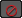
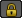

您可以使用动画层按钮来禁用、锁定和单放单个动画层。动画层按钮也适用于动画层的重影选项。
也可以选择动画层节点，然后使用“通道盒”(Channel Box)或“属性编辑器”(Attribute Editor)来设定打开或关闭层的禁用、锁定和单放属性。
禁用层
禁用动画层时，该符号变为红色 ，并且层名称显示为灰色。
禁用父层时，也禁用了其子层。
单放层
如果单放一个或多个动画层，则自动激活所有其他层的“禁用”选项，因此只有单放层的动画才回放。
您也可以使用“唯一只用”(Exclusive Solo)选项快速单放选定的动画层，以及禁用所有其他动画层。
唯一只用动画层
单放选定的动画层，而禁用所有其他动画层。
锁定一个动画层
该层已锁定 ，不再接收关键帧。